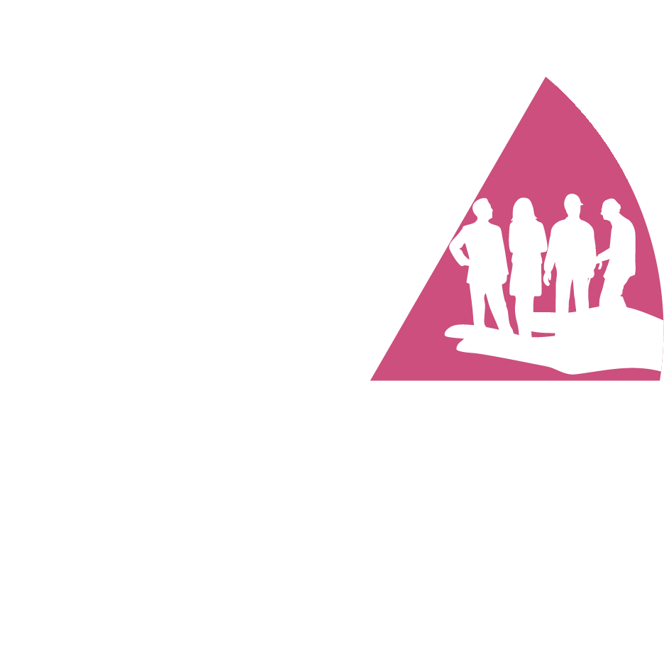
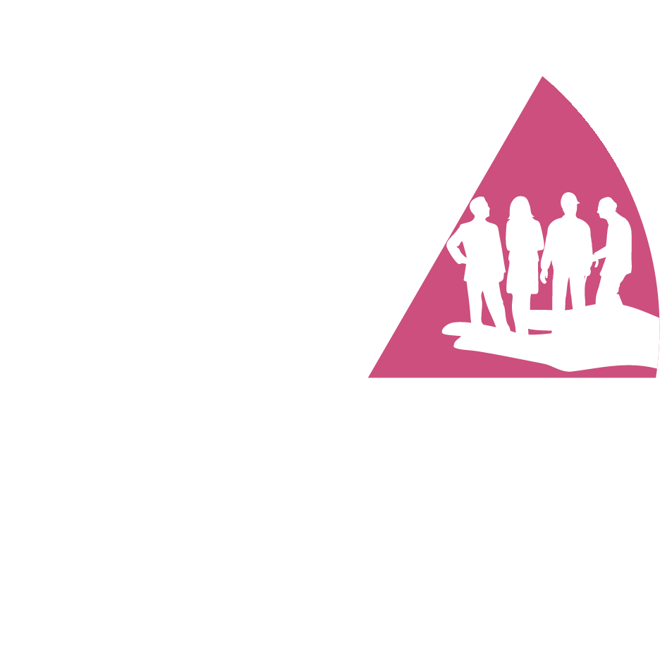

Biodiversidade
Emissão de Gases
Tratamento de Água
Serviços
Energia
A Fiagril no Mundo
Conduzir nossos negócios de maneira sustentável significa para nós gerar valor para todos os envolvidos: parceiros comerciais, comunidades locais vizinhas às unidades, clientes, sociedade e investidores.
Responsabilidade e Parcerias Locais
Consideramos essencial para nossos negócios a adoção de posturas, comportamentos e ações que promovam o bem-estar dos nossos colaboradores e da comunidade onde estamos presentes.

Conformidade
Comunidades Locais
Relação com fornecedores
Resíduo
 



Desempenho
Ética
Educação
Emprego
Diversidade
Saúde
Nossa Estrutura
Investir na ampliação dos conhecimentos de nossos funcionários impacta positivamente em produtividade e em desenvolvimento dentro da empresa.